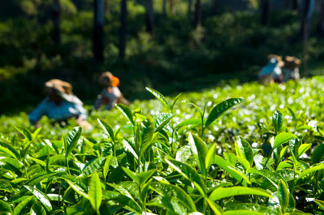
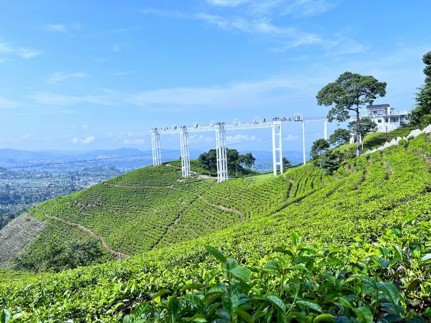

Di ketinggian sekitar 1.200 meter di lereng barat Gunung Lawu, Kebun Teh Kemuning terhampar bagai permadani hijau yang menyejukkan mata. Kawasan ini telah menjadi sumber kehidupan masyarakat sekitar sejak masa kolonial, ketika perkebunan teh pertama kali dibuka di wilayah tersebut.
Ritme yang Mengikat Generasi
Setiap pagi, para pemetik teh menyusuri jalur-jalur kebun mengikuti ritme yang sama seperti generasi sebelumnya. Aktivitas memetik, mengolah, hingga menyeduh teh telah menjadi bagian dari identitas warga Kemuning — sebuah siklus hidup yang berjalan selaras dengan musim dan embun pagi pegunungan.
"Daun teh dipetik dengan sabar, sama seperti budaya dirawat dari generasi ke generasi."
Fakta Menarik
- Berada di ketinggian sekitar 1.200 mdpl di lereng barat Gunung Lawu
- Perkebunan teh ini telah beroperasi sejak masa kolonial Belanda
- Menjadi sumber mata pencaharian utama bagi warga Desa Kemuning
- Kini juga menjadi destinasi wisata alam dan edukasi pengolahan teh


Mengapa Penting?
Kebun Teh Kemuning adalah contoh nyata bagaimana alam dapat membentuk cara hidup sebuah komunitas. Menjaga kelestarian kebun ini berarti turut menjaga mata pencaharian dan ritme kehidupan yang telah berlangsung lintas generasi.